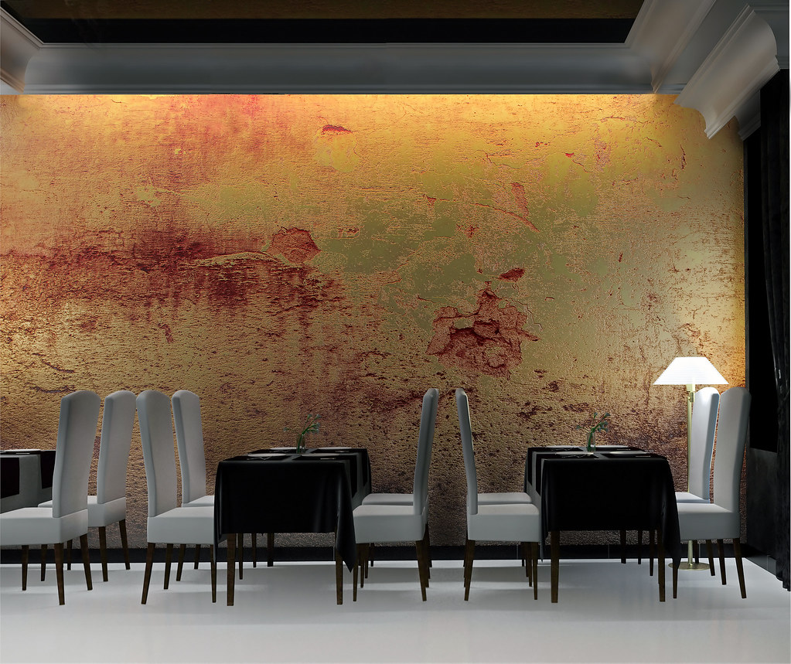
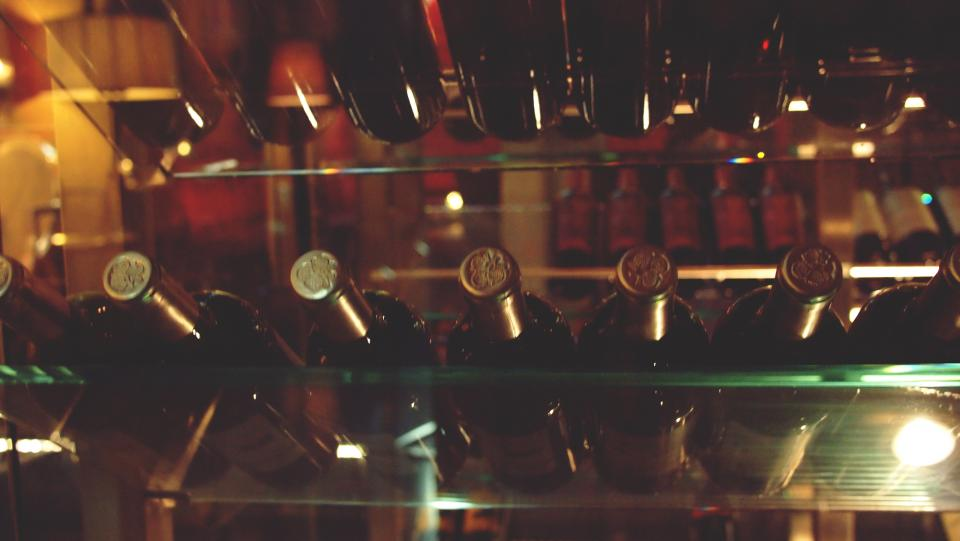
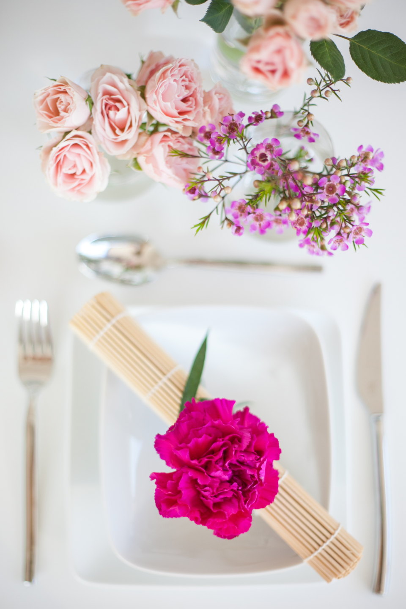

店内・オープンキッチン
オープンキッチンとカウンター席が生み出す、当店ならではの臨場感。仕込みから盛り付けまでの手仕事を、写真でご紹介します。
掲載写真はすべてフリー素材(Openverse / CC0・PDM)のイメージであり、実店舗の写真ではありません。




オープンキッチンとカウンター席が生み出す、当店ならではの臨場感。仕込みから盛り付けまでの手仕事を、写真でご紹介します。
掲載写真はすべてフリー素材(Openverse / CC0・PDM)のイメージであり、実店舗の写真ではありません。


